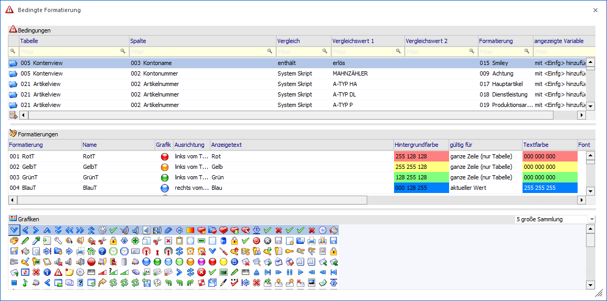

Über den Menüpunkt…
1 Audit
1 Bedingte Formatierung
… können Einstellungen vorgenommen werden, um im Programm auf bestimmte Live-Daten hinweisen zu können - z.B. Einfärbung der Matchcode-Zeilen aufgrund des Lagerstandes, oder Hinweis aufgrund einer Eigenschaften-Zuordnung zum Kundenstatus oder dergleichen mehr.
Voraussetzung
Damit die Bedingte Formatierung verwendet werden kann, ist die Lizenz WinLine BI CORPORATE und zumindest eine WinLine mdp runtime notwendig.

Das Fenster ist in drei Bereiche unterteilt:
ü Bedingung
In diesem Bereich
kann eingestellt werden, welche Kriterien zutreffen müssen, damit die bedingte
Formatierung angewendet wird.
ü Formatierungen
In diesem
Bereich kann eingestellt werden, wie das Element dargestellt werden soll, auf
das die Bedingung zutrifft.
ü Grafiken
In diesem Bereich
können Grafiken für die Einstellung der Formatierungen ausgewählt werden.
Buttons
Ø Ok
Durch Anklicken des Buttons "Ok" bzw. durch Drücken der F5-Taste werden alle vorgenommenen Einstellungen gespeichert und das Fenster wird geschlossen.
Ø Ende
Durch Anklicken des Buttons "Ende" bzw. durch Drücken der ESC-Taste wird das Fenster geschlossen, vorgenommene Änderungen werden verworfen.
Ø Exportieren
Durch Anklicken des Buttons "Exportieren" können alle vorgenommenen Einstellungen als MDP (mesonic MDP Project) - Datei in ein beliebiges Verzeichnis abgespeichert werden.
Ø Importieren
Durch Anklicken des Buttons "Importieren" können bereits einmal exportierte Einstellungen in das Programm importiert werden. Dadurch wird der Öffnen-Dialog von Windows geöffnet, aus dem dann eine MDP-Datei (mesonic MDP Project) gesucht und geöffnet werden kann.
Hinweis
Wenn bereits Einstellungen vorhanden sind, werden diese von den Daten aus der Import-Datei überschrieben. Mit dem Import erfolgt auch gleich die Speicherung der Einstellungen, d.h. es muss nicht noch extra mit F5 gespeichert werden.